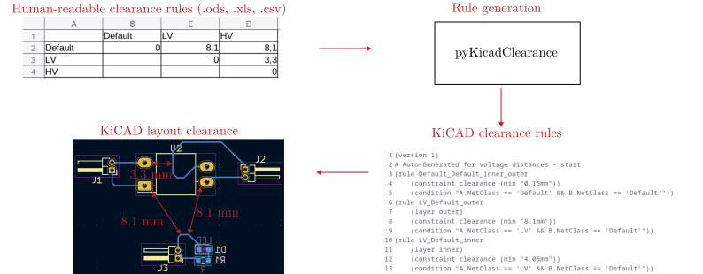
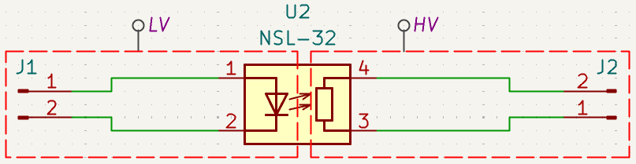

1 Welcome to KiClearance
This Python program converts a given table of voltage distances into KiCad design rules.
1.1 Installation
Install KiClearance directly from pyPI:
pip install kiclearance
1.2 Usage
Create a table (clearance.ods/xls/csv) in your KiCad project directory with voltage clearances defined by your requirements (e.g. standards). Use this template as a guide: clearance.ods.
Add the net classes to each connection in the circuit diagram.
Add the same net classes in the net classes of the PCB editor:
KiCad PCB Editor: File -> Board Setup -> Design Rules -> Net classes

Navigate to the project folder with the KiCad project and the clearance.ods/.xls/.csv file. Open a terminal and execute :
python -m kiclearance
Now a file yourprojectname.kicad_dru is generated, which contains the rule sets.
Open your Kicad project, the rule sets are now stored and you can start the routing.
1.3 Tips and tricks
If two network classes are assigned to a connection by mistake, this is displayed as an error in the Electrical Rules Checker (Inspect -> Electrical Rules Checker).
KiCad works through the rules from bottom to top: Once an applicable rule has been found, kiCad will not search for further rules. Keep this in mind when adding your own rules.
1.4 Example
A complete example can be found here.
1.5 Troubleshooting
This program has so far been tested only on linux.